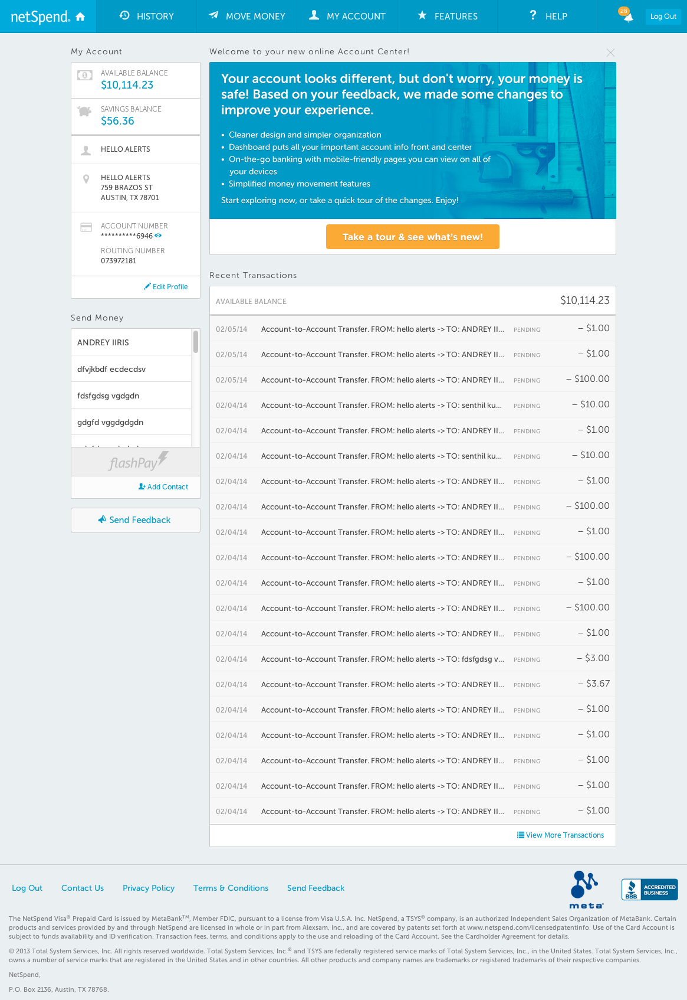
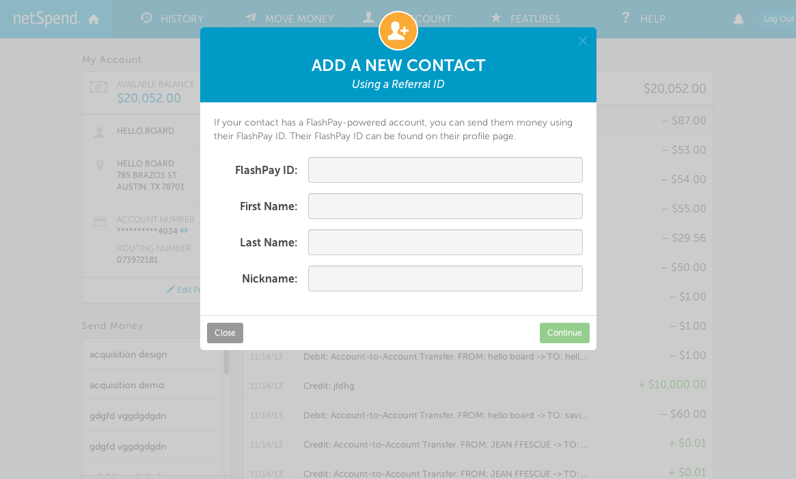
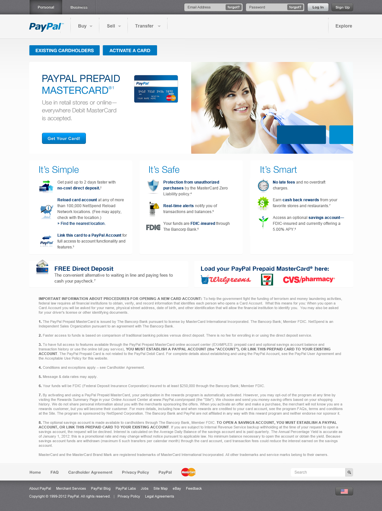
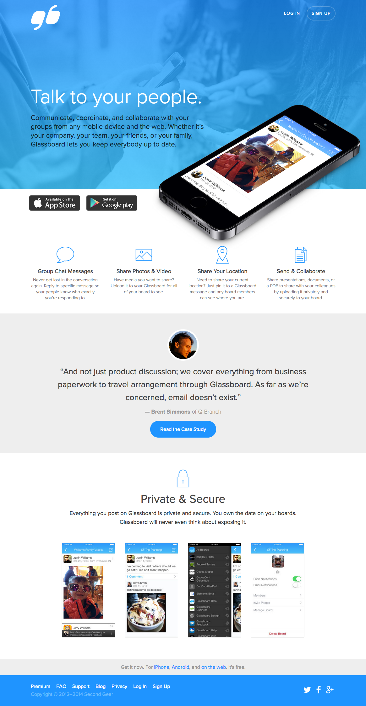
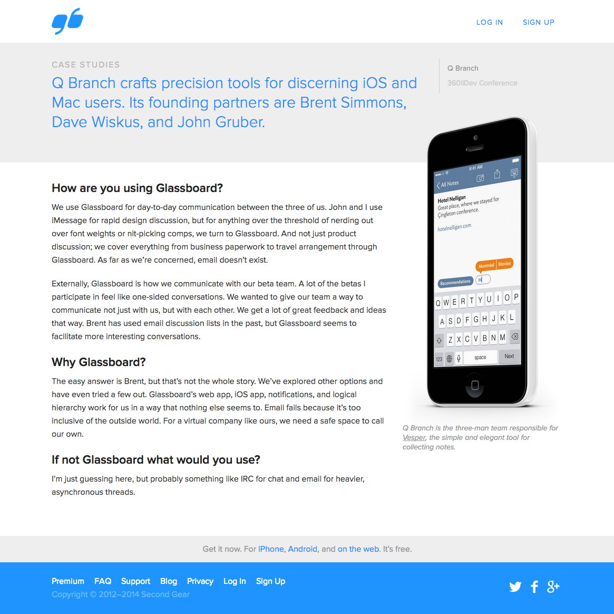
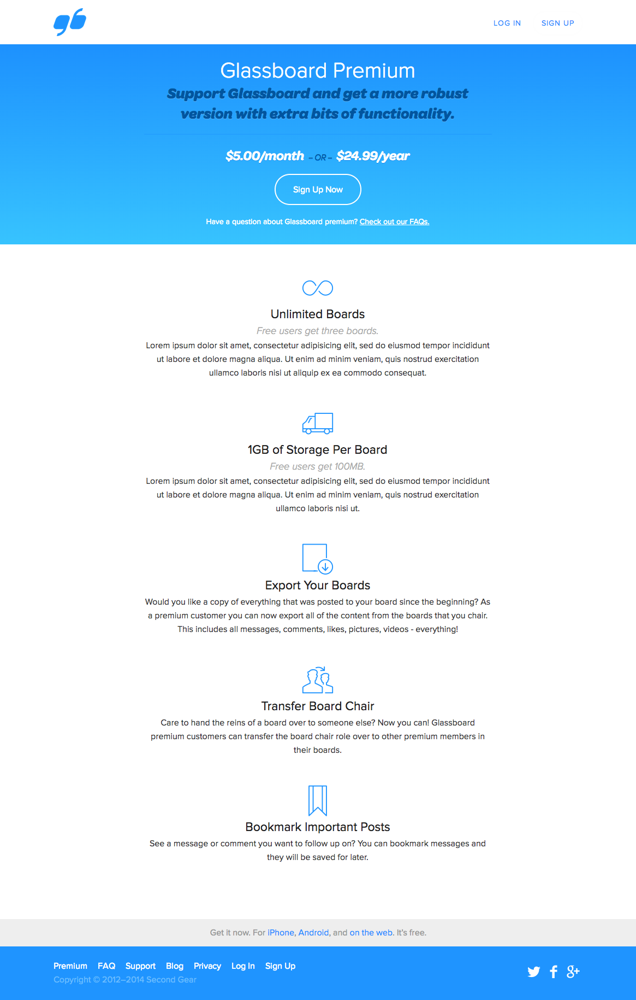
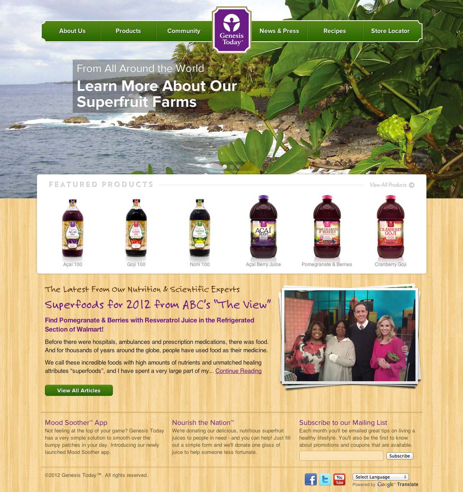
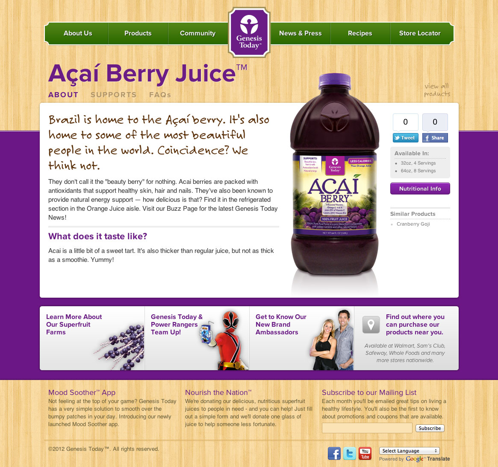
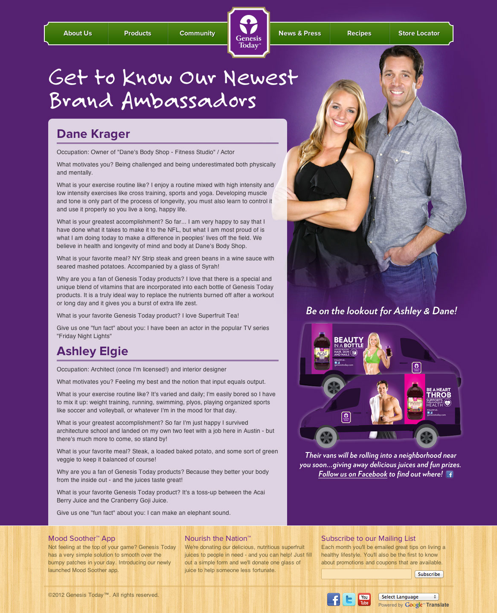

NetSpend
Online Account Center
There were three main goals when planning out the redesign of the online account center. First and foremost, it had to be mobile friendly. Our customers coming to the site via a mobile device were increasing month by month and we knew it wouldn't be long until they outpaced desktop. Second, we wanted it to be faster. A big thanks goes to the developers who used Angular to turn it into a single page application, but we also did some things on the design side to make everything lighter. And third, bring the over all design up-to-date.
Dashbaord: We made a conscious decision to bring everything users typically go to look at, front & center.
I, along with a few other designers, created custom icons for the navigation. Very different from a traditional list menu, but this approach came back with great results from the usability lab.

Modals were also designed with white labeling in mind. Swap out the primary and secondary colors of a brand, and we're all set.
Acquisition Sites
This is just one of the many acquisition sites I designed while at NetSpend. I was also responsible for coding out our first repsonsive template that is now the standard for acquisition.
Second Gear
Glassboard Marketing Site
Justin Williams, the CEO of Second Gear, and I had a long chat before any work was started on this project. His main goals were to put more focus on the app store buttons and to give the site a much needed facelift. It's not live yet, but should be by the end of May (for now you can view it here).
  Genesis Today
Marketing Site
For the redesign of Genesis Today's website I used big, beautiful imagery that spanned the entire upper half of the screen. I felt this let the user know right away where the exotic fruits that are used in the juices and supplements come from. Bright and vivid colors are used throughout and is one of those sites that's just fun to explore.
  